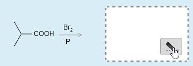
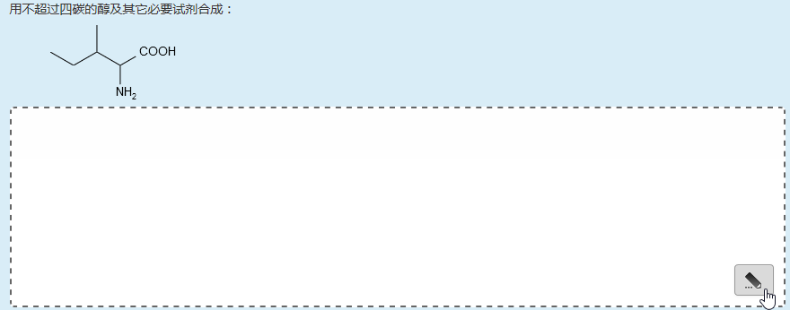
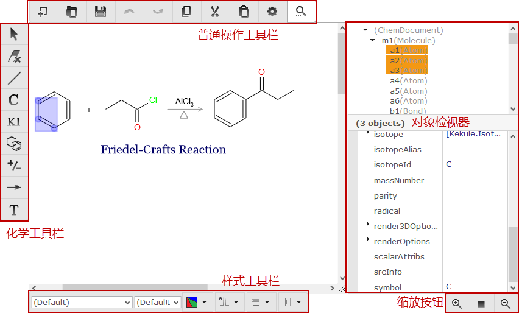
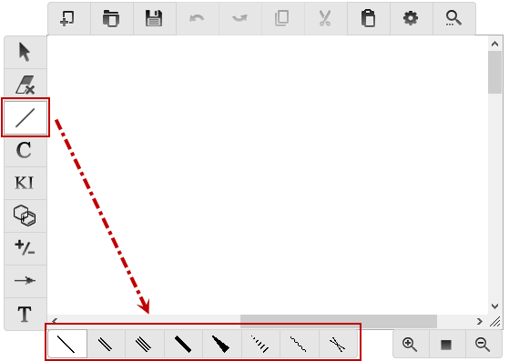

化学编辑器的使用
在线习题系统中大量使用化学编辑器以输入分子结构等信息。如在反应式题或合成题空白处移入或点击鼠标，将出现“编辑”按钮：


点击此按钮则将弹出对话框，其中的核心部件即为化学编辑器，其界面如下图所示：

普通操作工具栏各主要按钮功用如下：
| 按钮 | 功用 |
|---|---|
| 新建文档 | |
| 载入化学文档，支持mol/mol3000/CML/JSON等格式 | |
| 存储化学文档 | |
| Undo，撤销前一步操作 | |
| Redo，重做之前撤销的操作 | |
| 复制选中的对象 | |
| 剪切选中的对象 | |
| 粘贴之前复制或剪切的对象 | |
| 打开对象检视器 |
而化学结构的输入主要依靠化学工具栏：
| 按钮 | 功用 |
|---|---|
| 选择工具，用以点选或框选原子、键等对象 | |
| 删除工具，用以删除选中的对象 | |
| 化学键工具，用以输入各类化学键（尤其是共价键） | |
| 原子工具，用以在分子结构中输入杂原子及一些常见基团 | |
| 分子式工具，用以在文档中直接输入分子式 | |
| 环工具，用以快速输入环丙烷、环己烷、苯等常见的环状分子 | |
| 电荷工具，用以指定单个原子上的电荷 | |
| 箭头工具，用以输入反应箭头、加热符号等图符 | |
| 文本工具，用以直接输入一段文字 |
其中部分按钮按下后，编辑区下方会新出现一新工具栏。如点击化学键工具，下方将出现一行子按钮，以供输入不同种类的化学键（单键、双键、叁键、楔线键等）：

对于输入有机分子而言，使用最多的当属化学键工具、环工具与原子工具，前两者构筑分子骨架，后者对原子进行改动。当前的编辑器中，输入的结构皆相当于键线式。以下几段视频大致说明了输入分子的一些基本操作。
使用化学键工具输入分子骨架
有机分子的基本骨架可以用化学键工具轻松搭建起来。对于类似完成反应式这样的题型，每空限填入一个分子，这时编辑器中将会限制输入，后继的键只能在已输入分子的原子上“生长”出来。
输入环状分子
单用化学键工具也可以输入环结构，但环工具提供了更快捷的手段。另外新环也可以在旧环的基础上“生长”，生成桥环或螺环结构。
使用原子工具输入杂原子与常见基团
对于碳之外的杂原子，类似于键线式中的做法，我们需要用原子工具输入杂原子类型，如本例中的氧原子。需要注意的是，输入杂原子时，只需键入杂原子的元素符号，而无需指定该原子连接氢的数目，编辑器会根据原子旁成键情况自动计算并标出杂原子上的氢——这点与纸面上的键线式略有区别。如在纸面键线式中的羟基，我们需要手动写出-OH两个原子，而该例中左上角的羟基只需输入O原子，H会自动标记上去（与之对应，右侧五元环上的O编辑器也自动判断其上未连接H）。
此外，利用原子工具，也可直接输入甲基、乙基、苯基、羧基、醛基等一系列常见基团，在编辑框中直接输入该基团缩写即可（如本例中的甲氧基与酯基）。输入基团时，缩写中的H切勿省去，如羧基，必须输入COOH而非COO。
操作已输入的分子
对于编辑器中的既有对象，可以利用选择工具将其选中，而后执行移动、缩放、旋转等操作。若有多余的原子或键，可以利用删除工具抹去。
输入反应式
对于合成、机理等题型，我们需要输入的不再是单个分子，而是一系列的反应式。此时我们可在编辑区空白处点击键工具或环工具，加入新的分子。箭头工具可用以输入反应箭头、加热符号等图符，分子式工具可输入反应中涉及的简单或无机分子。
由于较为复杂，目前需要输入反应式的合成、机理等题型无法自动评判，须由教师手动评分。